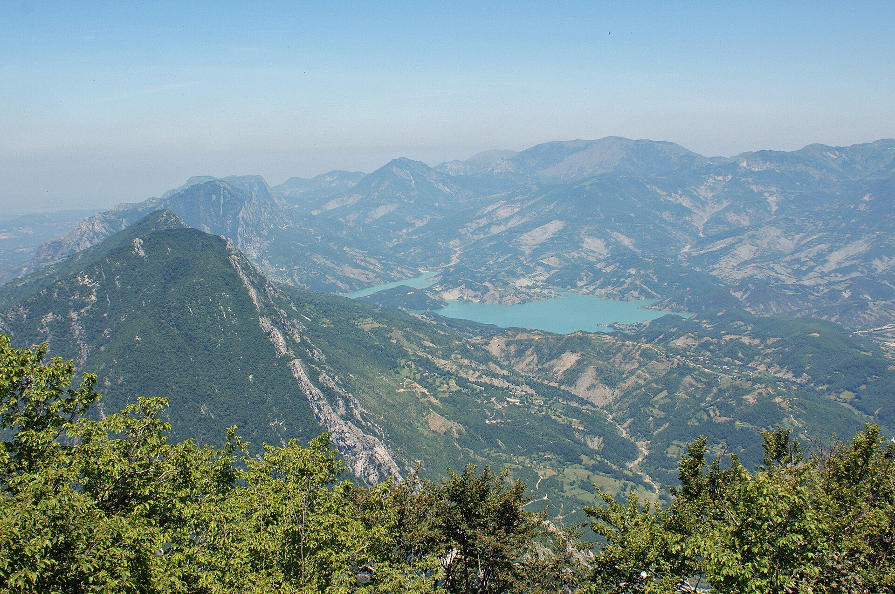
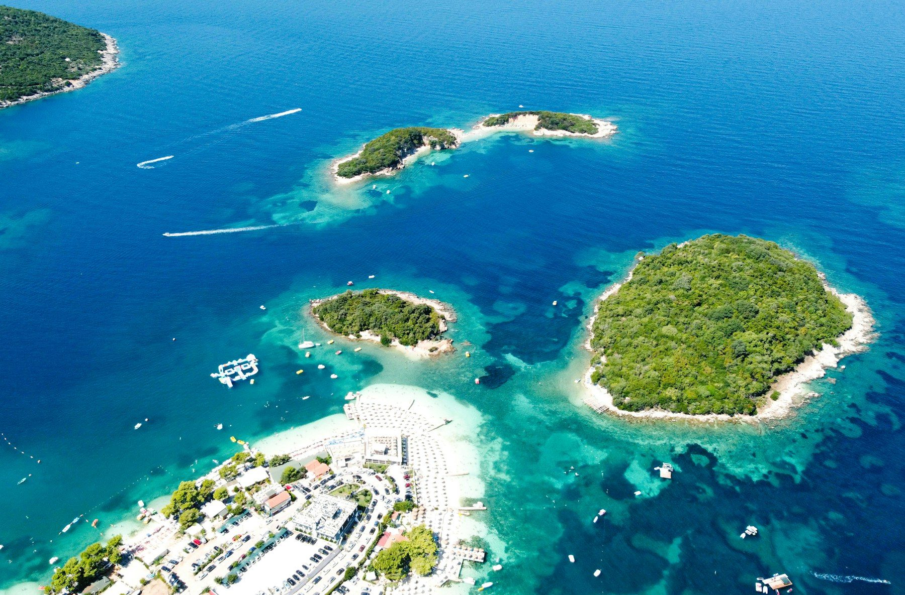

10
10
Shkodër
Day 9 · gateway to the lakes and the Alps
Rozafa castle, the pedestrian street stroll, and launching point for Lake Skadar and the Alps.
Read →
 11
11
Komani Lake & Lumi i Shalës
The fjord-like ferry day
The Komani ferry through the gorge and the Shala river at the far end — Albania's dramatic water route.
Read →

12
Krujë & Bovilla
Day trip from Tirana
The Bovilla reservoir and rock-climbing lines, with Gamti mountain over the dam.
Read →
 13
13
Tirana
Days 10–11 · bunkers, cable cars, and Blloku
Bunk'Art, the Dajti cable car, Skanderbeg Square, the Pyramid at sunset, and the Lake Park.
Read →
 14
14
Berat
Days 12–13 · the city of a thousand windows
Mangalem and Gorica, the castle, the Onufri Museum, the viewing platform and the main boulevard.
Read →
 15
15
Himarë
Riviera beaches · southern coast
Livadhi sunsets, the Filikuri kayak — plus the deck's Gjipe cove walk, private boat day, Porto Palermo and the Old Qeparo & Borsh road trip.
Read →
 16
16
Gjirokastër & the south
From the Albania deck · stone city and the Kurvelesh highlands
The UNESCO stone old town, the Peshtura waterfall hike, and the deck's Blue Eye stop on the way up from the coast.
Read →
 22
22
Dhërmi & Llogara
From the Albania deck · the mountain-to-beach day
The Llogara viewpoint walk over the pass, then Dhërmi's long beach and its beach-club rows.
Read →

23
Sarandë, Ksamil & Butrint
From the Albania deck · 3 nights · the southern beach base
Ksamil's island beaches, the UNESCO ruins at Butrint, and Sarandë's promenade for sunset drinks.
Read →